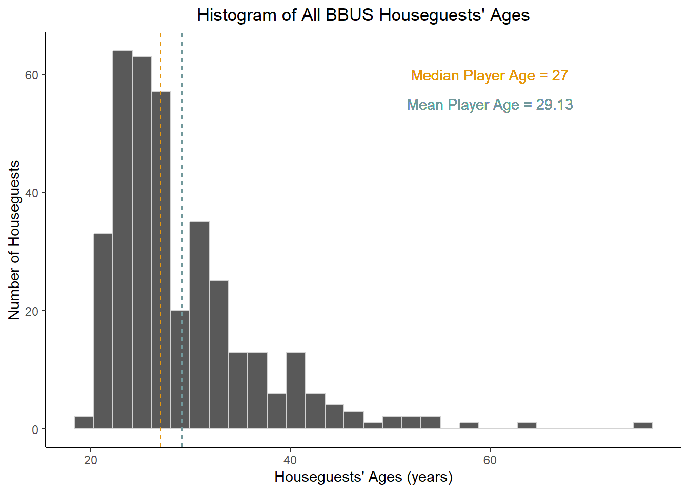

Visualize the spread of player ages across all seasons as a histogram

Figure 1: Data plotted as the number of houseguets (y-axis) that fall in to each category. Each bar representes 2 years of age. The mean and median player ages are indicated by couloured vertical dashed lines.
Key Insights:
- Visual inspection of the distribution of players indicates that most BBUS houseguests are in their mid-late 20’s during the filming of their seasons.
- The distribution of BBUS houseguests’ ages is “right-skewed”, indicating that the mean overestimates central tendency (and the median is a better measure of the average houseguest age in this case).
- The mean age of BBUS houseguests is 29.13 years, whereas the median player age is 27 (plotted as vertical dashed lines above).
Graph Houseguests’ Ages Each Season

Figure 2: Data plotted as mean value +/- SEM. The red line represents the median player age of 27 years.
Key Insights:
- The average age has not been changing systematically across the 25 seasons of BBus.
- The “right skew” in the histogram above is evident most seasons:
- The majority of houseguests are clustered in their 20’s with 2-4 players > 35 years each season.
Plot losers’ vs winners’ ages agains one another
Figure 3: Bars represent mean player age +/- SEM. Each BBUS player is plotted as an indiviual datapoint. The horizontal yellow line represents the median player age of 27 years.
Key Insights:
- BBUS winners are not significantly younger than the median player age of 27.
Graph the linear relationship between player age and place on their season.
Figure 4: Data points represet individual players aggregated acorss all season of BBUS. The red line is the linear line of best fit that represents the relationship between players’ ages and place in BBUS.
Key Insights:
- Age of player is not a significant linear predictor of which week they will be evicted from the BBUS house.
- Player’s age accounted for less than 1% of the variability observed in eviction week (F(1,352) = 0.05, p = 0.8))
The slope of the red line is not singificantly different than 0, indicating that there is not evidence to support the hypothesis that younger players get evicted systematically earlier than younger players..